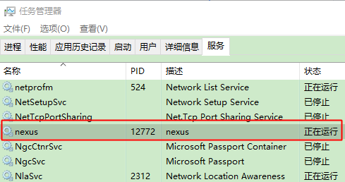

私服是指私有服务器，是架设在局域网的一种特殊的远程仓库，目的是代理远程仓库及部署第三方构建。有了私服之后，当maven需要下载构件时，直接请求私服，私服上存在则下载到本地仓库；否则，私服请求外部的远程仓库，将构件下载到私服，在提供给本地仓库下载。
简介
Nexus是一个强大的maven仓库管理器，它极大的简化了私服仓库的维护和外部仓库的访问。它不需要数据库而是使用文件系统加Lucene来组织数据，使用ExtJS来开发界面，利用Restlet来提供完整的REST APIs，通过IDEA和Eclipse集成使用，支持webDAV与LDAP安全身份认证。
优势
- 加速构建
- 稳定（应付一旦中央服务器出问题的情况）
- 控制和审计
- 能够建立内部公用仓库，统一开发规范
- 方便开发迭代和技术共享
安装
Nexus 专业版是需要付费的，这里我们下载开源版Nexus OSS
解压即可使用，安装包下有两个子目录：
- nexus-3.16.1-02：此目录是安装目录，该目录包含了Nexus 运行所需要的文件，如启动脚本、依赖jar包等
- sonatype-work：此目录是工作目录，包含Nexus生成的配置、日志文件、仓库文件等。
操作命令
执行命令前，需要先打开CMD进入nexus主目录下的bin目录，如：E:\nexus-3.16.1-02-win64\nexus-3.16.1-02\bin
1 | 注册服务 |
Tips：执行命令如果出现错误：java.lang.NumberFormatException: null，则可能是jdk版本不对，或路径中带中文
在执行注册和启动命令后，可以打开任务管理器查看启动的服务：

访问
启动服务后，大致等待几十秒服务完全启动就可以通过这个网址访问主页：http://localhost:8081/
使用默认的用户名和密码登陆（admin/admin123）
注：如果需要修改登录网址的端口号，可以到安装目录下E：\nexus-3.16.1-02-win64\sonatype-work\nexus3\etc打开nexus.properties文件，将application-port改成自己的端口，初始文件中代码都被#号注释了，只需将所有#删掉即可
Nexus仓库
仓库类型：
- hosted：宿主仓库，主要用于部署无法从公共仓库获取的构件以及自己或第三方的项目构件
- proxy：代理仓库，代理公共的远程仓库；
- group：仓库组，Nexus 通过仓库组统一管理多个仓库，这样我们在项目中直接请求仓库组即可请求到仓库组管理的多个仓库
总结：我们可以上传私有的项目到hosted，并配置proxy以获取第三方的依赖（比如可以配置中央仓库的地址）。前面两个都弄好了之后，在通过group聚合给客户提供统一的访问地址。
创建宿主仓库

创建代理仓库
常用的远程仓库地址
1 | http://repo1.maven.org/maven2/ |
创建完需要检查状态是否有成功
可以点进去重建下索引和清除缓存，本地maven项目在同步时，需要从索引检查jar包
创建仓库组
调用私服
下载jar包
将私服仓库组配置到settings.xml文件（配置在POM文件也可以）
1 |
|
标签的id和url分别可以在Nexus界面查看到
设置完setting文件后，假如我们在POM文件增加一个JUNIT依赖，点击同步后，Maven就从本地仓库查找JUNIT的jar包，找不到就查找私服，私服在宿主仓库（Zts_repository）找不到，继续往代理仓库（Zts_proxy）查找，代理仓库直接从远程仓库下载到代理仓库，再放到到本地。如图，我们可以看到jar被下载到代理仓库
上传jar包
方式一：
POM文件：指定项目部署路径
1 | <distributionManagement> |
setting文件：增加上传需要通过Nexus用户验证
1 | <server> |
打开CMD命令行进入到项目根文件目录中,执行命令
1 | mvn deploy |
成功后可以在私服中可以看到部署的jar包
方式二：
手动指定部署的配置
1 | mvn deploy:deploy-file -DgroupId=com.co.webapp -DartifactId=webapp -Dversion=1.0 -Dpackaging=jar -Dfile=D:\GIT\webapp\target\webapp-1.0.jar -Durl=http://localhost:8081/repository/Zts_repository/ -DrepositoryId=Zts_repository |
参数说明：
- -DgroupId：为上传的jar的groupId
- -DartifactId：为上传的jar的artifactId
- -Dversion：为上传的jar的version
- -Dpackaging：为文件类型，这里为jar
- -Dfile：为jar包路径，注：jar包推荐放在根目录，多层目录可能会报错
- -Durl：为要上传的路径
- -DrepositoryId 为repository的唯一标示